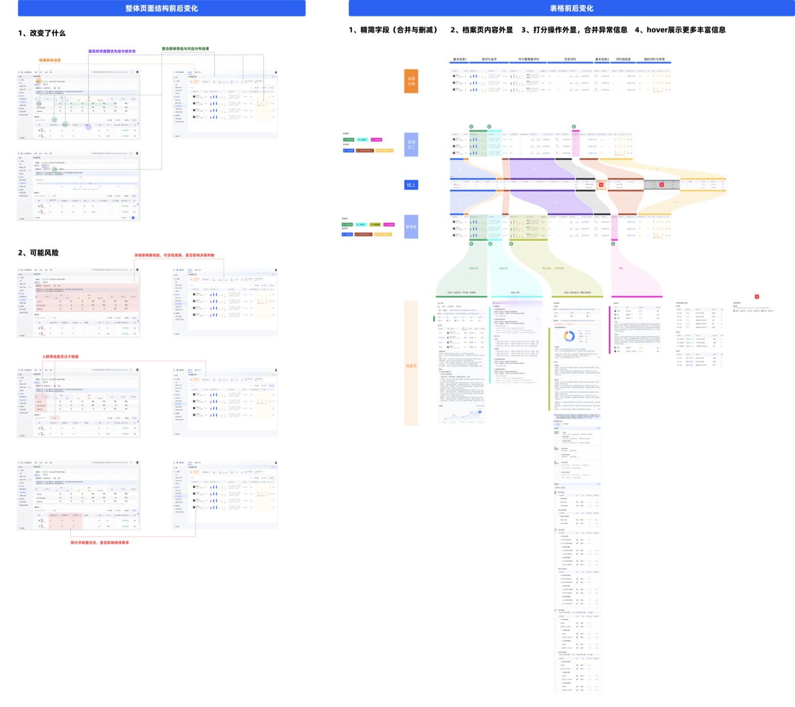
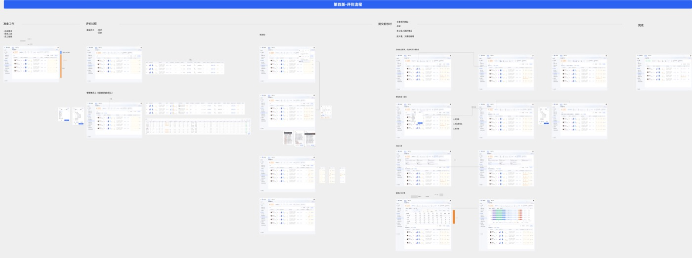

—
—
当前浏览器无法内嵌预览此 PDF，请使用右上角 Open 查看。
在 200 条真实数据请求 (n = 200) 的盲测集合上，对比通用 AI 与本决策引擎的 Top-1 选图命中率。每条样本由 3 名设计师匿名标注一组合理图表，命中其一即视为正确。
在「Flow 流程」类（漏斗 / 桑基 / 甘特 / 弦图）上提升最显著（+ 55pp）， 这正是通用 AI 最容易"用饼/柱凑合"的边界类。
覆盖图表数 31 → 47（+ 16），整体 Top-1 命中率 71% → 89%（+ 18pp）。每个版本对边界场景做一次精修，曲线呈"稳定爬坡"而非阶跃式跳跃 — 一种刻意的工程化节奏。
点击任意一层，展开它在决策链路中的职责与产出。这是支撑上方 89% 命中率的核心管线。
—
挑一个意图与一种数据结构，引擎给出主推与备选，并解释推理。
先选一个意图与数据结构。
点击家族切换；图鉴里的每一格是一个图表的最简记号。
面对一套随业务规模化逐渐失效的人才管理系统，我把切入点从 UI 抛光重新放回信息流与决策流：管理者真正需要看到什么、理解什么、决策什么。覆盖绩效 / 盘点 / 晋升等核心 OD 场景，把"功能集合"重塑为"统一决策平台"。
界面复杂只是表象。真正的问题是组织在规模化后，信息流和决策流开始失效。
页面结构不一致，信息分散在不同模块与表格里，相似场景缺乏统一表达——管理者完成一次绩效判断，需要跨页面切换、比对、记忆。
Symptom · 跨页比对 · 高记忆负载表面是操作成本高，本质是系统缺少面向"组织决策"的信息架构与行为逻辑——继续做 UI 抛光只能延缓崩坏，不能解决系统命题。
Symptom · 决策无依据 · 偏差不可见"筛选会影响哪些区域？""当前状态意味着什么？""下一步该做什么？"——这些过去高度模糊的问题，让管理者在高密度信息里反复迷失方向。
Symptom · 反馈缺失 · 路径模糊不再继续堆叠历史流程；而是从业务目标重新反推系统结构。
把绩效评价从"任务列表 + 表格"重构为"准备 → 评价 → 提交校对 → 完成"的清晰节奏；每个阶段都有明确的角色 · 信息密度 · 关键决策。
两张设计板分别处理"页面结构"与"核心表格"的前后对比——前者解决"看哪里"、后者解决"看什么"。
改变了什么 / 可能风险——围绕"项目进度、群体筛选、异常优先级"三组关键决策点重组页面骨架。

精简字段 · 档案页内容外显 · 打分操作外显 · hover 展示更多丰富信息。让"档案"承接明细，让"主表"承担群体判断。

不是局部体验优化的细则，而是跨绩效 / 盘点 / 晋升场景的系统性约束——后续业务扩展时仍然有效。
不是围绕表单和模块。同一个人 / 同一个组织在哪个流程里，看到的都是统一视图。
设计目标从"补全字段"转为"前置关键信息"——结果分布、风险提示、历史趋势、评价偏差。
主表负责扫读群体异常 / 档案承接明细查询 / hover 提供轻量增量信息。
筛选影响哪些区域、当前状态是什么、下一步是什么——全场景使用同一套反馈语言。
把"需要被处理的差异"从表格中段拉到顶部，让管理者第一眼看到风险。
校准不是结果展示，而是组织层面对齐口径、暴露偏差的核心动作——单独建模为流程节点。
同一套层级 · 状态 · 反馈规则跨绩效 / 盘点 / 晋升复用，业务扩张时不需要从零再设计一次。
AI 工具普及后，传统 LeetCode 风格面试逐渐偏离真实工作场景。本项目以快手社招为 MVP，把"是否能调度 AI、结合工程上下文解决真实问题"建模为一套可考核、可观察、可回放的招聘基础设施——覆盖招聘系统 · 萝卜面试间 · 自研 IDE · 评估与回放四条线。
竞品调研（HackerRank / Codility / 牛客 / Meta）后我们发现：问题不只是"加一个 AI 聊天框"。真正的失效在题目、信号和招聘流程三个层面同时发生。
单文件 · 无依赖 · 无上下文的算法题，在 AI 工具普及后几乎可以被秒杀，无法区分候选人在多文件工程里的判断力与协作能力。
Symptom · AI 一键解题 · 区分度坍塌仅看最终提交无法回答关键问题：是否在采纳 AI 输出前做了验证？是否能识别幻觉 API？Prompt 是否结构化？面试官只看代码 diff，看不到决策过程。
Symptom · 决策过程不可见 · 信号丢失从 R 安排面试 → 面试官出题 → 候选人异步答题 → 下一轮面试官查看 IDE，整条链路涉及多角色 · 多状态 · 多通知。任意一环失稳，整个考核都会失败。
Symptom · 多角色协同 · 状态易飘移把考核对象从"代码本身"重定义为"候选人 × AI"组成的临时协作系统。系统的评估单位不是答案，而是过程信号。
从 R 安排面试到下一轮面试官读 IDE，整条链路在招聘系统 · 萝卜 · 自研 IDE · 通知中心之间穿行。每个阶段都有清晰的角色 · 触发器 · 状态机。
不止是一个嵌入萝卜的 IDE。整套系统沿"采集 → 调度 → 观测 → 评估 → 呈现"的方向被刻意切分为 6 层——每一层都有自己的状态机和数据契约。
设计方案落地在 7 个面向不同角色的核心界面上——每一屏只承担一个意图，跨屏之间通过统一的视觉语言与状态机彼此衔接。下方为各核心界面的结构原型。
基于开源 IDE 嵌入萝卜，左侧文件树 / 中间编辑器 / 底部 Terminal / 右侧 AI 面板。顶部固定 60min 倒计时与双机位预览。
所有 AI 请求经统一 Proxy，强制结构化 Prompt、模型路由、上下文管理。下图为后台调度面板视角。
4 个泳道：Prompt · Code Diff · Terminal · Browser/Web。Decision Points 高亮显示候选人在"采纳 / 拒绝 / 验证"等关键时刻。是评估引擎的唯一事实底座。
规则引擎与 LLM-as-judge 共同输出 4 个轴的分数。每一个分数点都能下钻到 Timeline 上具体的事件。
下一轮面试官在面试间打开 AI Coding Tab：行为摘要卡 + 只读 IDE + Decision Points 跳转 + AI 草拟追问问题。
面试官 / 用人经理跨候选人对比：4 维分布 · 异常行为标签 · 容器健康 · 题目级 AI-Solvability 反馈。
面试官从题库选题：左侧筛选（部门/岗位/语言/难度），右侧 README 预览，每题标注 AI-Solvability 与采用率。
规则引擎处理硬性信号（是否运行测试 / 是否泄漏 API key），LLM-as-judge 处理 prompt 质量与推理深度。每个评分点都能回放到 Timeline 上具体的时间戳。
能否在 3 分钟内产出子任务清单 · 覆盖边界场景
信号：子任务数 / 边界覆盖率 / 是否先规划Prompt 是否结构化 · 是否合理路由模型 · 迭代深度
信号：Prompt 清晰度 · 模型选择 · 平均循环次数采纳 AI 输出前是否运行测试 · 是否识别幻觉 API
信号：未验证采纳次数 · 幻觉捕获率 · 回滚行为是否考虑幂等 · 监控 · 降级 · 日志脱敏
信号：测试覆盖增量 · 工程缺陷 · 生产化讨论在量化目标之外，更重要的是"考核结果是否真的影响了招聘决策"——这是衡量这套系统价值的唯一定性指标。
不是局部体验细则，而是这套系统在演进中始终不能让步的边界。
Observability 是评估的唯一事实底座；所有评分点都必须能回链到具体的 Timeline 事件。
所有 AI 请求经统一 Proxy · 强制结构化 Prompt · 注入检测 · 幻觉 API 校验。
每道题都打 AI-Solvability 分数，理想区间是"AI 可 assist 但需人判断"。
只有"下一轮"面试官可见 IDE · reference 文件夹仅面试官可见 · 候选人不可二次进入。
独立考核房间 · 与面试间互不干扰 · 容器与状态自治 · 取消面试时正确级联失效链接。
容器启动成功率 · 启动时长 · 中断率作为一等指标，决定系统能否承载招聘信任。
MVP 只覆盖社招 1 题，但 IDE · 评估 · 题库的协议从一开始就为多题 · 校招 · 自动评分留出位置。